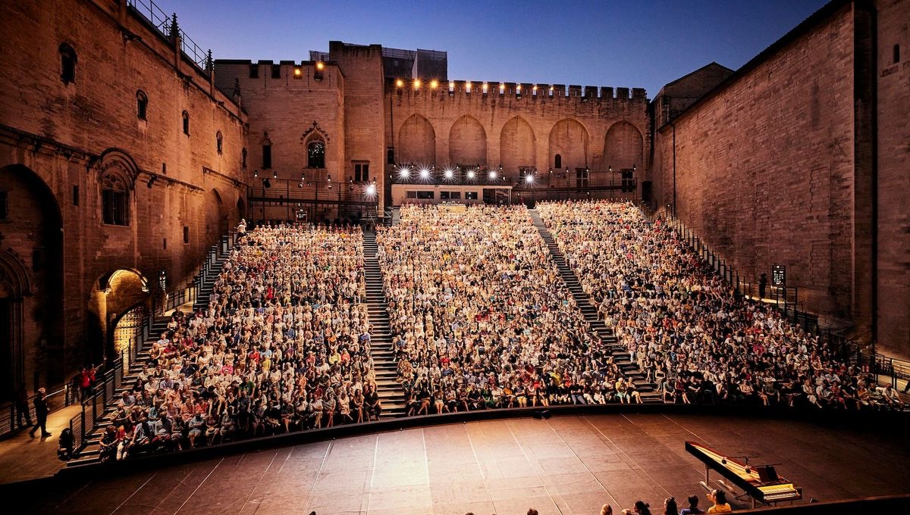
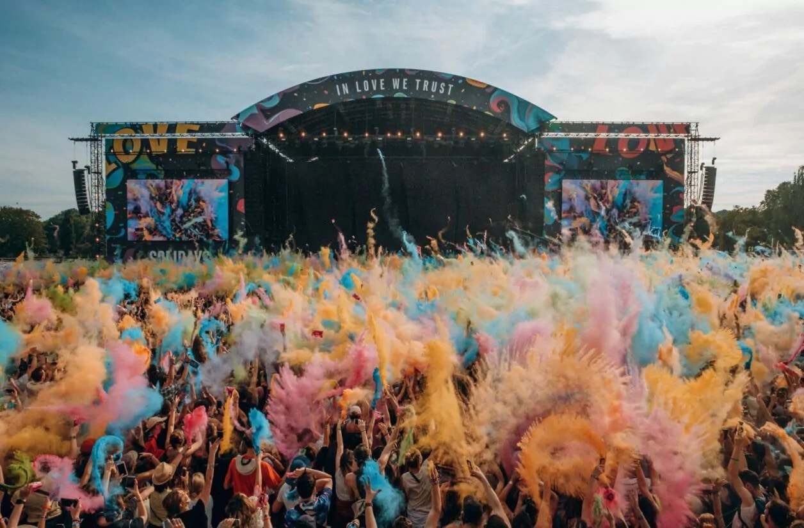
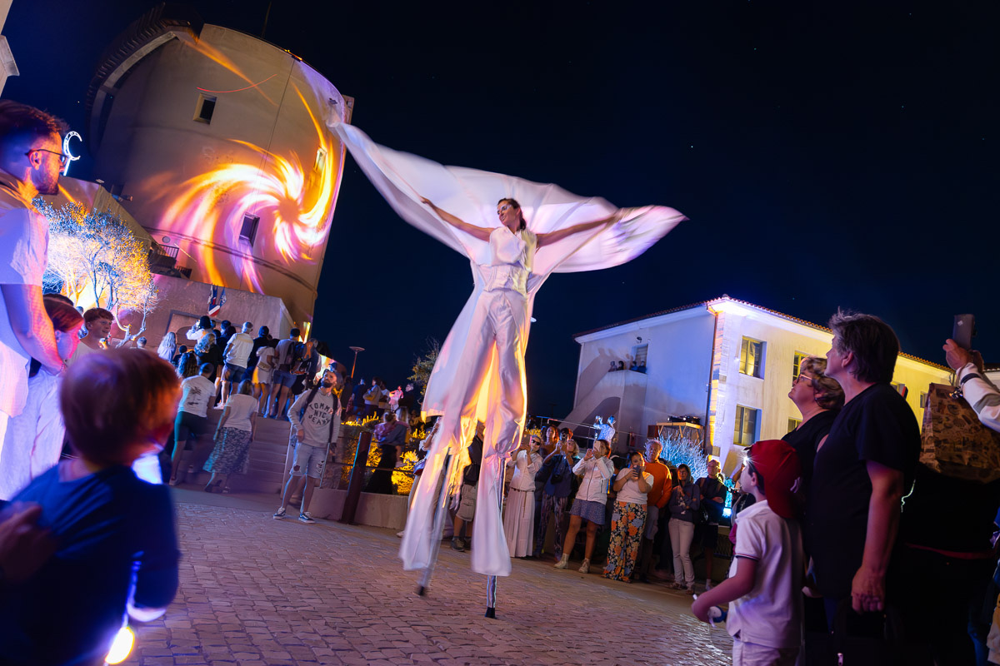
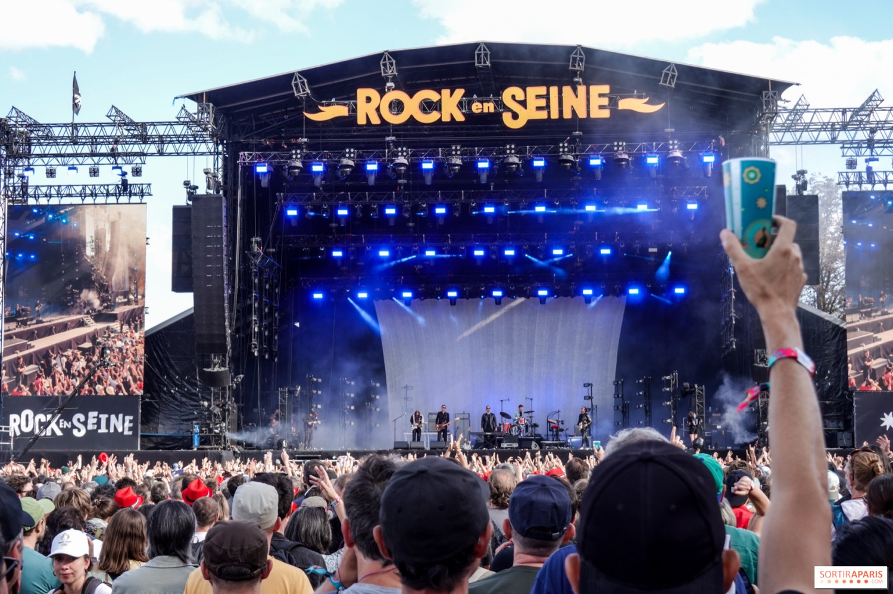
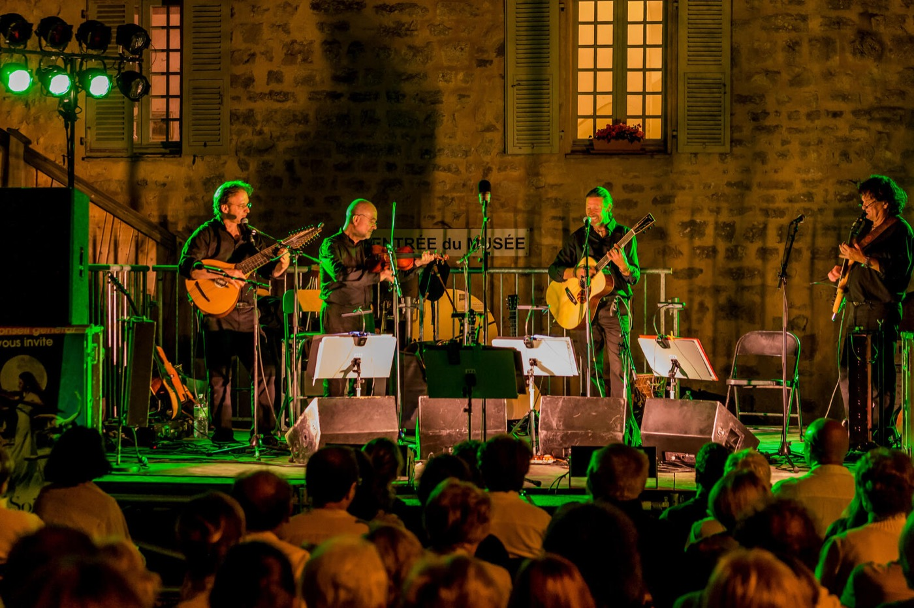

L'atlas des festivals en France
7 273 festivals. Chaque point en est un.
Du jazz dans le Gers à la bande dessinée à Angoulême, le pays en compte l'équivalent de 20 par jour de l'année. Voici où ils sont, quand ils ont lieu, et ce que les données disent vraiment.
Un point, un festival, placé au hasard dans sa région : le fichier national ne donne pas la commune.
Sources : ministère de la Culture, Open Data Corse, Insee, CNM. Comment ces chiffres sont calculés
L'essentiel en quatre chiffres
- 944 en Auvergne-Rhône-Alpes, la région qui en compte le plus, juste devant Provence-Alpes-Côte d'Azur.
- 19,4 pour 100 000 habitants en Corse, 3,7 fois plus qu'en Île-de-France.
- 44 % sont des festivals de musique. C'est la première discipline dans les 13 régions de métropole.
- 48 % sont nés depuis 2010, parmi ceux dont l'année de création est connue.





01 · Le territoire
Le plus de festivals n'est pas le plus dense
En volume, trois régions dépassent les 900 festivals. Rapportée à la population, la carte se renverse : l'Île-de-France passe dernière et la Corse première.
Le classement porte sur les 13 régions de métropole. L'outre-mer compte 145 festivals, consultables dans l'annuaire. Population : Insee, estimations au 1er janvier 2023.
02 · Les disciplines
La musique partout, mais chaque région a son accent
Près d'un festival sur deux est musical. L'écart à la moyenne nationale révèle ce qui distingue vraiment chaque territoire.
Part de chaque discipline par région, en % des festivals de la région
03 · Les saisons
L'été bat tous les records. Il ne fait pas tout
En plein été, il y a 2,3 fois plus de festivals par semaine que le reste de l'année. Mais 62 % se tiennent en dehors de ces onze semaines.
La largeur de chaque bloc représente la durée de la période, sa hauteur le nombre de festivals par semaine, et sa surface le nombre total de festivals. 76 festivals sans période exploitable ne sont pas comptés.
04 · L'histoire
Trois festivals sur quatre sont nés depuis l'an 2000
Soit 76 % de ceux dont on connaît la date. Le pic de créations arrive en 2015, avec 365 nouveaux rendez-vous recensés.
Festivals recensés selon leur année de création
Ce graphique montre les festivals en activité dans le recensement, pas tous ceux qui ont existé : ceux qui ont disparu n'y figurent pas, ce qui gonfle mécaniquement les années récentes. La chute après 2019 s'explique sans doute par la date du recensement et par la pandémie. Base : 5 761 festivals à l'année de création exploitable.
05 · Gros plan
La Corse, première région de France par habitant
Avec 69 festivals au recensement national pour environ 355 000 habitants, l'île devance toutes les régions. Le panorama régional en détaille 24, tous localisés.
14 en Haute-Corse
10 en Corse-du-Sud
13 hors juillet-août
Le calendrier de l'île, festival par festival
Juillet domine, mais la saison ne s'arrête pas en septembre : l'automne appartient au cinéma, avec 6 festivals de films en octobre et novembre, à Ajaccio, Bastia et Porto-Vecchio.
Voir les 24 festivals
Pourquoi 69 et 24 ? Les deux fichiers n'ont ni le même périmètre, ni la même date : le recensement national est plus large que le panorama régional, publié avec des éditions 2018-2019. Les sites web cités datent de ce panorama.
06 · L'économie
Complets, et pourtant dans le rouge
68 %
des festivals remplis à 90 % ou plus étaient déficitaires en 2024, contre 42 % en 2023.
Sur les 31 festivals concernés du panel. Sur l'ensemble des 107 festivals étudiés, 62 % finissent en déficit, pour un résultat moyen de −42 177 €.
Évolution entre 2023 et 2024
Les charges progressent plus vite que les recettes, et trois fois plus vite que l'inflation.
Source : Centre national de la musique, Économie des festivals, données 2024. Le panel réunit 107 festivals de musiques actuelles et de variétés aidés par le CNM : il n'est pas représentatif de tous les festivals. Pour situer le secteur : la culture pèse 49,5 milliards d'euros en 2023, soit 2,0 % de l'économie (DEPS).
07 · L'annuaire
Trouvez le vôtre
Les 7 273 festivals du recensement, à fouiller par nom, région, discipline ou période.
| Festival | Région | Discipline | Période | Création |
|---|
08 · La méthode
D'où viennent ces chiffres
Tous les chiffres sur les festivals sont calculés automatiquement à partir des fichiers ci-dessous. Rien n'est saisi à la main, et les limites sont dites.
Les sources
- Liste des festivals en France : ministère de la Culture, Cartographie nationale (Deps-doc, France Festivals, Cepel, 2022), Licence Ouverte 2.0.
- Panorama des festivals en Corse : Open Data Corse.
- Population des régions : Insee, estimations au 1er janvier 2023.
- Économie des festivals 2024 : Centre national de la musique.
Le nettoyage
- 7 283 lignes dans le fichier d'origine, 10 doublons strictement identiques retirés, soit 7 273 festivals. Les homonymes sont gardés : il existe plusieurs « Festival du rire ».
- L'année de création est manquante ou inexploitable pour 1 512 festivals (par exemple « 19ème », soit 66 saisies non datées). Ils restent comptés partout, sauf dans le graphique d'histoire.
- Période : les mois isolés sont rattachés à leur saison. Juin et septembre, à cheval entre deux périodes, restent « non précisés ».
Les limites
- Le recensement retient des événements actifs en 2019, de plus d'une journée, avec au moins cinq spectacles ou projections. Il ne fixe pas de définition officielle du festival : d'autres décomptes donnent d'autres totaux.
- Le fichier national classe chaque festival par région, pas par commune : les points de l'accueil sont placés au hasard dans leur région.
- La discipline est celle jugée dominante : un festival mêlant jazz et cinéma ne compte qu'une fois.